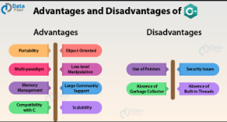

adventages of programming languages:
links
adventages of programming languages
.

adventages of machine languages:
Machine language makes fast and efficient use of the computer.It requires no translator to translate the code. It is directly understood by the computer.
adventages of assembly languages:
Assembly language is easier to understand and use as compared to machine language,It is easy to locate and correct errors,It is easily modified.
adventages of high-level languages:
High-level languages are user-friendly,They are similar to English and use English vocabulary and well-known symbols,They are easier to learn,They are easier
to maintain,They are problem-oriented rather than 'machine'-based,A program written in a high-level language can be translated into many machine languages and
can run on any computer for which there exists an appropriate translator,The language is independent of the machine on which it is used i.e. programs developed
in a high-level language can be run on any computer text.